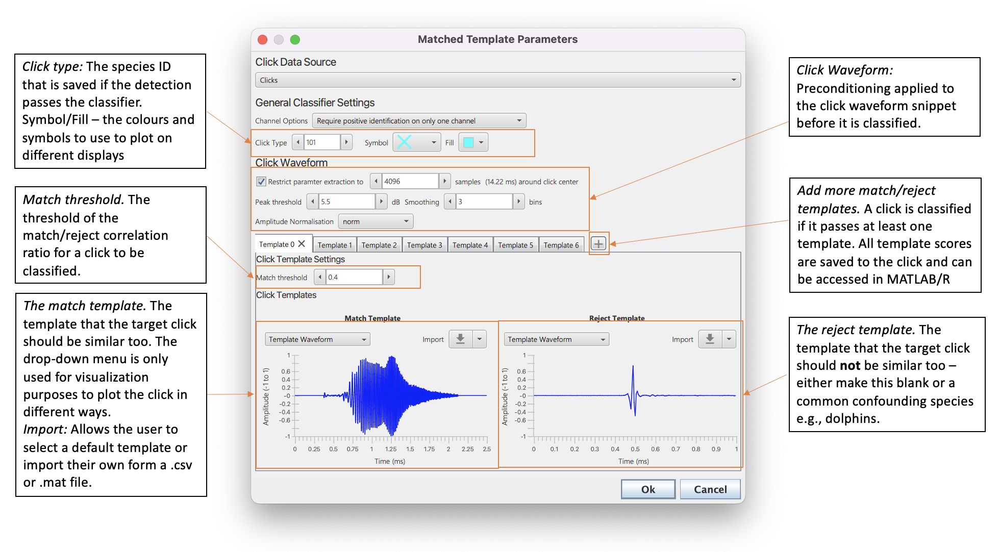
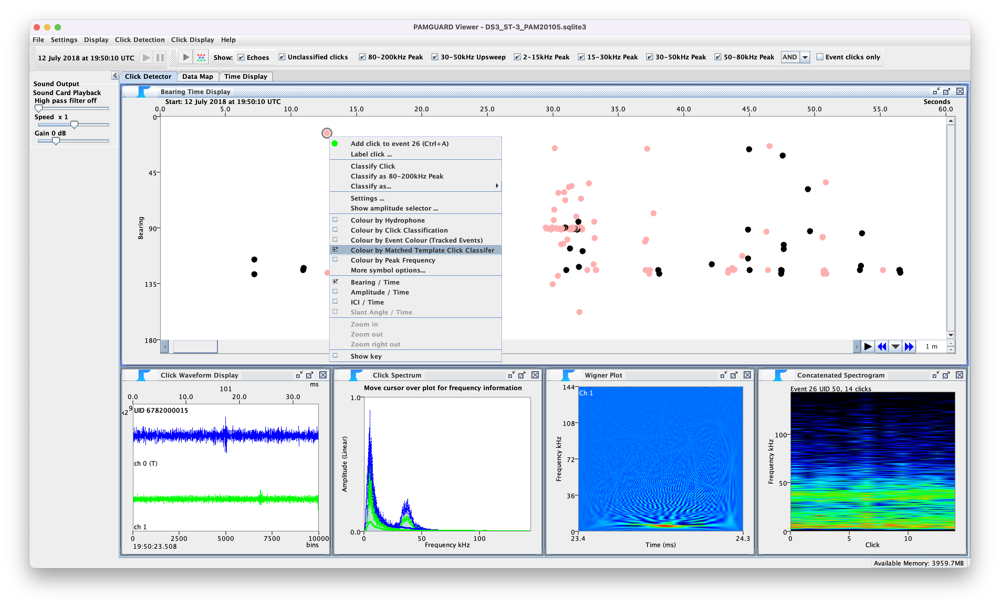
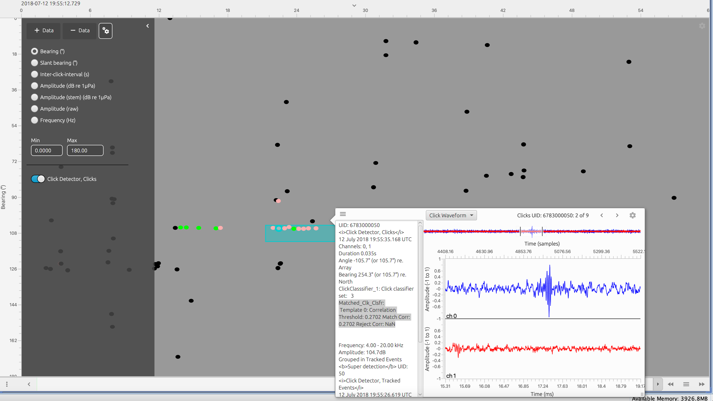
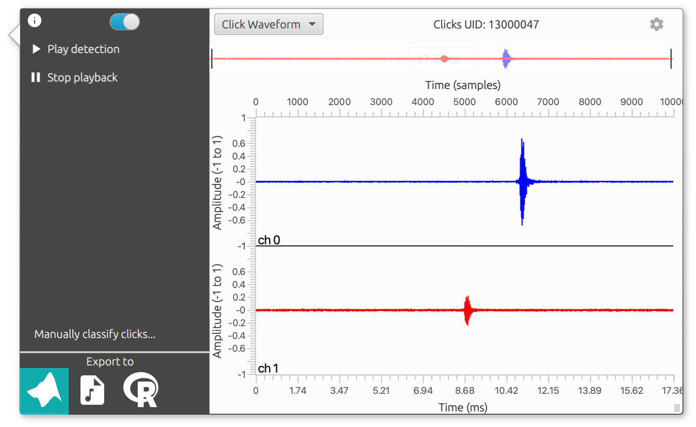

The matched click classifier is an alternative to the in built click classifier in the click detection module which uses two click templates (target and reject) to classify individual clicks detections from the click detection module. The idea behind this classifier is to more accurately classify rarer clicks when there
The classifier is based on a matched filter i.e. a candidate click detection is compared to a template and it's maximum correlation value with the template is then used for classification. Each click is compared to both a match and a reject template. If the difference between the correlation match to the reject template exceeds a certain threshold, then the click is classified. There can be multiple combinations of match to reject templates allowing the matched classifier to deal with different types of clicks or even clicks from multiple species.
The matched click classifier settings are accessed via Settings-> Matched click classifier_. The settings are split into the three sections, general settings, click waveform and click templates.

The settings pane of the matched click classifier
The general settings allow for channel options, species ID and the default colours for classified clicks to be to be set. _ Channel Options _allows users to define whether a single click from one channel, all clicks or an averaged click should be used to be used for classification in multi-channel situations. if there is only one channel then this makes no difference.
Click Type sets the number that defines the species ID. Make sure this is not the same as any of the species IDs in the default click classifier (this is why the default is set so high).
Symbol and Fill define the default colours clicks which have been classified by the matched click classifier should be plotted on displays.
Before a click is classified it undergoes some pre-conditioning by the matched click classifier.
Restrict parameter extraction to XX samples sets the maximum length of the waveform to the classifier. If this is selected, then center of the click is located and samples trimmed around the center. In some use cases, for example SoundTrap detections, which may be 10,000 samples long, setting a lower number of maximum samples can greatly increase processing speed and improve the accuracy of results. Note that if the number of samples is set too low (e.g. well below the click template length) then the correaltion values will not make much sense.
Peak threshold and Smoothing are both parameters used to find the click center so that a click can be trimmed to the maximum number of samples. The click length is measured by calculating the waveform envelope using a Hilbert Transform. The envelope is smoothed using a moving average filter (the Smoothing parameter defines the size of the averaging window). The click is trimmed as follows. First the peak of the waveform envelope is found. The length of the click is defined as the point at which the click falls Peak threshold dB below the peak. The center of the click is then the middle of this snippet. The click is then trimmed from the center of the click.
Amplitude normalisation If there is a very loud click compared to a template it's correlation score will be different to that of a very quiet click of with exactly the same waveform. It is therefore a good idea to normalise the waveform before it is compared the match click classifier. The types of normalisation are
The matched click classifier has two templates, a match and a reject. The match template should match a stereotypical click of the target species and the reject template can either be a click from a confounding species (e.g. dolphin) or blank. Selecting the drop-down menu from the Import button allows for a selection of some default templates. Custom templates can be imported by selecting the Import button. Custom templates can either be a .csv. or .mat file using the following format.
.csv - the first row are the waveform measurements from -1 to 1 (make sure you save with a sufficient number of decimal points). The second row and first column is the sample rate in sample per second.
.mat - a .mat file that contains two variables named sR and waveform. sR is the sample rate in samples per second and waveform is a 1D array containing the waveform for the template form -1 to 1. Arrays of click structures imported using the PAMGuard to MATLAB library can also be used. The first channel of the first click in a list of clicks structures will be imported as the template. The click structure should be names clicks and the sample rate should be saved as a seperate variable named sR in sampes per second.
The match and reject templates are plotted to provide a user with some visualisation of the classifier settings - the drop down menu allows the user to select different ways to plot the templates and is purely for visualisation purposes so makes no difference to classifier settings.
threshold is the threshold at which a click is classified. If the difference between the match and reject templates is above the threshold value then the click is classified.
The + button can be used to add more tabs. Each tab contains a click/reject template pair and unique threshold setting. A click is classified if at least one of the match/reject templates passes it's set threshold.
The matched click classifier changes the species type flag of a click if at least one of the classifiers passes threshold. This means clicks can be visualised in the click bearing time display or the time base display. The classifier also saves the correlation values for each match/reject template pair which can be accessed in MATLAB/R or through the PAMGuard GUI.
Matched clicks can be viewed in the bearing time display. If a click passes the threshold of one match/reject pair then the click symbol (defined in general settings) is shown in the bearing time display if Colour by Matched Template Classifier is selected in the right click menu. The correlation values are shown by hovering the mouse over a click to bring up the info tool tip.

Screenshot of clicks classified from the matched click classifier showing matched clicks (coloured pink)
The time base display FX can show clicks classified by the matched clicks classifier. Colour by Matched Template Classifier must be selecting in the right settings window.

Screenshot of Time Base display FX showing clicks classified by the match click classifier (coloured pink). The correlation values can be found in the meta data section of the detection pop up menu (highlighted)
Note that the time base display allows users to export clicks to be used as templates. Using the advanced pop up menu right click on a click detection and select the MATLAB icon. A .mat file of the selected click or clicks will be saved to your root user folder in a folder called PAMGuard Manual Export. This .mat file can be opened by the matched click classifier - the first channel of the first click in the list will be imported as a template.

Clicks are loaded from binary files using the MATLAB/R function
clicks = loadPamguardBinaryFile("/path/to/pamguardfile.pgdf");
where clicks is a list of MATLAB/R structures containing the data for each click in the file.
The matched click classifier template threshold, match value and reject value are then accessed from each click using
matchedtemplatevals = clicks(1).annotations. mclassification
matachedtemplatevals is a list of where each row is the threshold value, match value and reject value for each match/reject template pair.